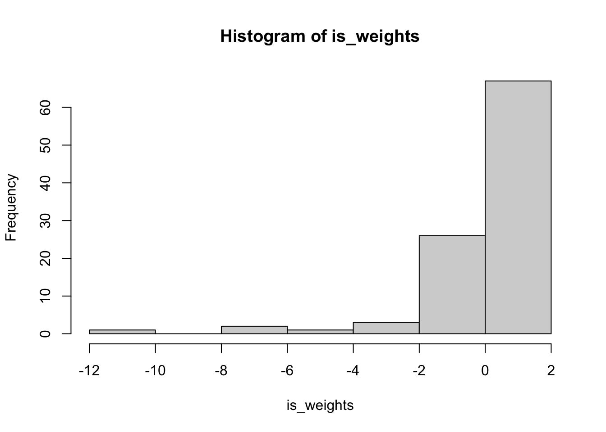
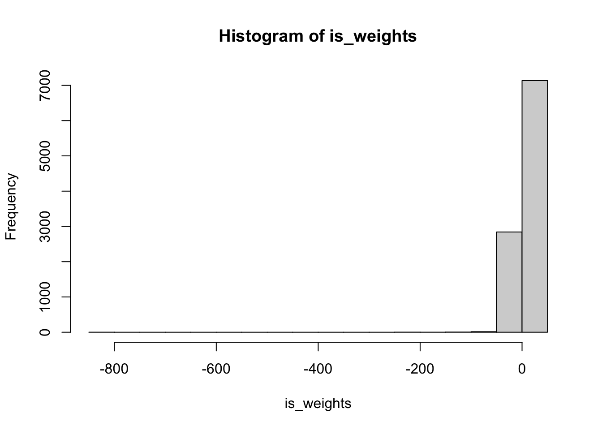
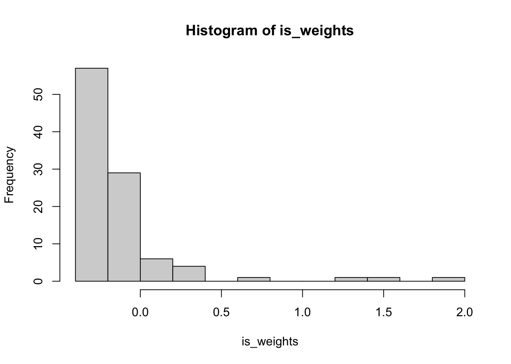
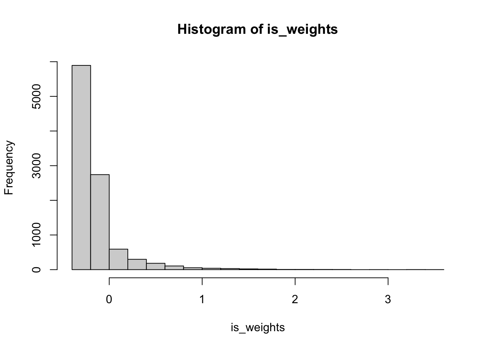

S_lb_norm <- ceiling(10^8 * pnorm(2.5) * pnorm(-2.5))
mu_hat <- mean(rnorm(S_lb_norm) > 2.5)
mu_hat[1] 0.006199857This HW is a combination of questions from Chapter 3 Robert, Casella, and Casella (1999) and Chapter 9 of Owen (2013). I’ve rewritten some of the questions to make them clearer where needed, but if anything is still unclear, please let me know!
Suppose we want an estimate of \(P(X > 2.5)\) when \(X\) is normally distributed with mean \(0\) and variance \(1\) and we use a simple Monte Carlo estimator to estimate this probability. This estimator will use \(h(x) = \ind{x > 2.5}\): \[ \begin{aligned} \hat{\mu} & = \frac{1}{S} \sum_{i=1}^S h(X_i) \\ X_i & \overset{\text{iid}}{\sim} \text{N}(0, 1),\, i = 1, \dots, S \end{aligned} \] Our Monte Carlo standard error is then: \[ \text{Var}(\hat{\mu}) = \frac{\Var{h(X_1)}}{S} \]
How many samples would we need to get the Monte Carlo standard error down to \(O(10^{-4})\)?
Show this using simulation in R.
How many digits should we report for our point estimate for \(\hat{\mu}\) if we want a 0.95 probability that our reported point estimate wouldn’t change with another sample? Put another way, when we create a 95% confidence interval for \(\mu\) using our estimate \(\hat{\mu}\) and \(\Var{\hat{\mu}}\), how many digits are common between our lower bound and our upper bound?
My use of \(O(10^{-4})\) is informal, what I should have said was, how many samples do we need to get our MCSE roughly on the order of \(10^{-4}\).
In order for our MCSE to be on the order of \(10^{-4}\) we need \[ \sqrt{\frac{\Var{h(X_1)}}{S}} \leq 10^{-4} \] Our \(h(X_1) = \ind{X_1 \geq 2.5}\), so \(\Var{\ind{X_1 \geq 2.5}} = P(X_1 \geq 2.5) P(X_1 < 2.5)\)
[1] 0.006199857Using our MCSE, which we’ve set for our simulation to be just under \(10^{-4}\), we get
So I would report something like \(P(X_1 > 2.5) = 0.006\).
Let \(X \sim \text{Gamma}(1, 1)\)
We need MCSE to be about \(10^{-4}\) to make this claim, so we can use the results from part \(a\) but changing how we evaluate \(P(X > 5.3)\):
[1] 0.004928846In order to get three digits of accuracy on \(a\), which is the \(0.995^\mathrm{th}\) quantile, we need roughly MCSE to be \(10^{-3}\). Using the same logic as above, we get \[ S \geq \frac{P(X > 5.3)(P(X \leq 5.3))}{f^2(5.3)}10^6 \] or
If we wanted to get report the digits to 0.995% precision, we would need to further multiply by \(z_{0.995}\), or the \(0.995^\mathrm{th}\) quantile of the standard normal RV.
These are both very very large numbers! We’ll pick the largest number and report the result to the proper number of digits:
You might also have done this problem using \(10^{-2}\) as the desired MCSE, which is also fine.
If we wanted to get report the digits to 0.995% precision, we would need to further multiply by \(z_{0.995}\), or the \(0.995^\mathrm{th}\) quantile of the standard normal RV.
Let \(f_Y(y) = \ind{y \geq 0}\lambda e^{-\lambda y}dy\), \(x = y + a\) so \(y = x - a\). \(dy = dx\) so \(f_X(x) = \ind{x - a \geq 0}\lambda e^{-\lambda (x - a)}dx\) or \(f_X(x) = \ind{x \geq a}\lambda e^{-\lambda (x - a)}dx\)
pnorm function.I’ll use the more general version with \(\lambda, a\) left unspecified so we can reuse this below. The term we need to compute for the variance formula is
\[ \begin{aligned} \int_{\R^+} h^2(x) f^2(x) / g(x) dx & = \frac{1}{\lambda 2\pi}\int_{x > a} e^{-(2 x^2 - 2 \lambda(x - a))/2} dx \\ & = \frac{e^{-\lambda a}}{\lambda 2\pi}\int_{x > a} e^{-(2 x^2 - 2 \lambda x)/2} dx \end{aligned} \] Completing the square for the exponent: \[ \begin{aligned} 2(x^2 - \lambda x) = 2\left(\left(x - \frac{\lambda}{2}\right)^2 + \frac{\lambda^2}{4}\right) \end{aligned} \] gives us
\[ \frac{e^{-\lambda a + \frac{\lambda^2}{4}}}{\lambda 2\pi}\int_{x > a} e^{-(x - \frac{\lambda}{2})^2/(2 \frac{1}{2})} dx \] We multiply and divide by \(\sqrt{1/2}\) to get: \[ \frac{\sqrt{\frac{1}{2}}e^{-\lambda a + \frac{\lambda^2}{4}}}{\lambda\sqrt{2\pi}}\int_{x > a} \frac{e^{-(x - \frac{\lambda}{2})^2/(2 \frac{1}{2})}}{\sqrt{2\pi}\sqrt{\frac{1}{2}}} dx \] so the integral is equivalent to: \[ \begin{aligned} P\left(\sqrt{\frac{1}{2}} Z + \frac{\lambda}{2} > a\right) & = 1 - P\left(Z \leq \sqrt{2}\left( a - \frac{\lambda}{2}\right)\right) \\ & = 1 - P\left(-Z \leq \sqrt{2}\left( a - \frac{\lambda}{2}\right)\right) \\ & = P\left(-Z > \sqrt{2}\left( a - \frac{\lambda}{2}\right)\right) \\ & = P\left(Z < -\sqrt{2}\left( a - \frac{\lambda}{2}\right)\right) \\ & = \Phi\left(-\sqrt{2}\left( a - \frac{\lambda}{2}\right)\right) \end{aligned} \] Which finally equates to
\[ \frac{\sqrt{\frac{1}{2}}e^{-\lambda a + \frac{\lambda^2}{4}}}{\lambda \sqrt{2\pi}}\Phi\left(-\sqrt{2}\left( a - \frac{\lambda}{2}\right)\right) \] Evaluating this for \(\lambda = 1\) and \(a = 2.5\) gives:
\[ \frac{e^{-2.5 + \frac{1}{4}}}{2 \sqrt{\pi}}\Phi\left(-2\sqrt{2}\right) \] or
Getting the variance after subtracting the square of the mean, or \(\Phi(-2.5)^2\):
Now that we want to get number of samples needed to get MCSE down to \(10^{-4}\), we solve for \(S\) like we did in Question 1:
\[ S \geq \Var{h(X)f(X)/g(X)}10^8 \] or
The reduction in the number of draws is quite large:
We need 99.5 percent fewer draws for the importance sampling estimator than we do for the brute force Monte Carlo estimator.
Taking our expression from above: \[ \frac{\sqrt{\frac{1}{2}}e^{-\lambda a + \frac{\lambda^2}{4}}}{\lambda\sqrt{2 \pi}}\Phi\left(-\sqrt{2}\left( a - \frac{\lambda}{2}\right)\right) \] and using the fact that \(P(Z \leq -z) = P(Z > z)\) when \(Z\) is symmetric about \(0\), we get:
\[ \frac{\sqrt{\frac{1}{2}}e^{-\lambda a + \frac{\lambda^2}{4}}}{\lambda\sqrt{2\pi}} \frac{1}{2\sqrt{\pi}\left(a - \frac{\lambda}{2}\right)} e^{-\left(\sqrt{2}\left( a - \frac{\lambda}{2} \right) \right)^2/2} \]
Ignoring constants that don’t involve \(\lambda\) gives: \[ \frac{1}{\lambda(a - \lambda/2)} \] Logging, taking derivatives wrt \(\lambda\) and setting equal to zero gives \[ -\frac{1}{\lambda} + \frac{1}{2a - \lambda} = 0 \] Solving for \(\lambda\) gives \(\hat{\lambda} = a\)
Taking derivatives again we get \[ \frac{1}{\lambda^2} + \frac{1}{(2a - \lambda)^2} > 0 \] Thus we’ve achieved a minimum.
The question didn’t prompt an expression for the optimized variance, but we get: \[ \frac{e^{-\frac{3 a^2}{4}}}{2 a\sqrt{\pi}}\Phi\left(-\frac{a}{\sqrt{2}}\right) \]
The ratio of the variances is
which would lead to about a twentieth of the required draws to achieve \(O(10^{-4})\) MCSE.
Owen Chapter 9, problem 9.1
For \(h(x) = x^2\), we have \[ \begin{aligned} \ExpA{X^2}{X \sim \text{Unif}(0,1)} & = \int_0^1 x^2 dx \\ & = 1/3 \end{aligned} \] \[ \begin{aligned} \ExpA{\frac{X^2\ind{0 \leq X \leq 1}}{2\ind{0 \leq X \leq 1/2}}}{X \sim \text{Unif}(0,1/2)} & = \int_0^{1/2} x^2 dx \\ & = 1/24 \end{aligned} \]
This is adapted from Gelman et al. (2014).
The target density is a standard normal density, while the importance density is a t distribution with 3 degrees of freedom, with a mean of zero and a scale parameter such that the second derivative of the log-density evaluated at the mode is equal to -1 (note that this matches the normal distribution’s curvature at 0).
We want to match the second derivative of the \(t_{3}(0, s)\) density at the mode with the normal’s. The density of a scaled t density is
\[ g_X(x \mid s) = \frac{1}{s\sqrt{\pi 3} \Gamma(\frac{3}{2})}\left(1 + \frac{x^2}{3s^2}\right)^{-2} \]
The log density is
\[ \log g_X(x \mid s) = -2 \log \left(1 + \frac{x^2}{3s^2}\right) \] Taking derivatives with respect to \(x\) gives: \[ \frac{\partial^2}{\partial x^2}\log g_X(x \mid s) = \frac{\frac{4}{3s^2}(\frac{x^2}{3s^2}-1)}{(1 + \frac{x^2}{3s^2})^2} \] Evaluating at \(x=0\) gives \(-\frac{4}{3s^2}\) which yields \(s = \sqrt{\frac{4}{3}}\).

This is a nice weight distribution, lots of big weights, very few small weights.
We should be able to estimate the first and second moments with these these weights:

These are quite close to the true values; we can quantify our uncertainty in these estimates using the formula for the variance of the mean computed from importance samples, which is just the variance of the the weighted draws:
\[ \Var{\hat{\mu}_{\text{IS}}} = \frac{1}{S} \left(\frac{1}{S} \sum_{i=1}^S \left(\frac{f(X_i)}{g(X_i)} h(X_i) - \hat{\mu}_{\text{IS}}\right)^2\right) \]
In our case this gives:
In order to get a confidence interval, we compute the square root of the variance and divide by \(\sqrt{S}\):
[1] 0.969129 1.005425[1] -0.031027551 0.005477943Now we use a normal distribution as the importance density for a t distribution.

Now we have the opposite distribution, we have a few very large weightrs, and many small weights. We expect our approximations to be poor.

The variance of the student t distribution with scale \(\sqrt{\frac{4}{3}}\) \[ \frac{3}{3-2} \frac{4}{3} = 4 \]
We understate our variance estimates for the student’s t, while the mean estimate is fine.
The reason we underestimate the variance is that the tails of the normal distribution are so thin that we don’t get enough samples in the tails.
The estimator is: \[ \hat{\mu}_{\text{IS}} = \frac{1}{S} \sum_{i=1}^S \frac{\sqrt{2}e^{\frac{X_i^2}{2}}}{s\sqrt{3} \Gamma(\frac{3}{2})\left(1 + \frac{X_i^2}{3s^2}\right)^2} X_i^2 \] In order for this estimator to perform well, we have to sample enough values of \(X_i\) where \(\abs{X_i}\) is large in order to recover the proper variance. When \(X_i \sim \text{Normal}(0,1)\), \(X_i^2 \sim \chi^2_1\).
We can cut up the domain of the integral to get a sense for how poorly we will estimate the integral with samples from a standard normal. Nearly all of our \(10{,}000\) samples from a standard normal will be within the interval \([-4,4]\).
\[ \begin{aligned} \int_{-\infty}^\infty \frac{x^2}{s\sqrt{\pi 3} \Gamma(\frac{3}{2})}\left(1 + \frac{x^2}{3s^2}\right)^{-2} dx & = \int_{-4}^{4} \frac{x^2}{s\sqrt{\pi 3} \Gamma(\frac{3}{2})}\left(1 + \frac{x^2}{3s^2}\right)^{-2} dx \\ & + \int_{\abs{x} > 4} \frac{x^2}{s\sqrt{\pi 3} \Gamma(\frac{3}{2})}\left(1 + \frac{x^2}{3s^2}\right)^{-2} dx \end{aligned} \]
The first integral is roughly \(1.8\) as confirmed by R’s integration function:
Given that we are limited in how much we can sample the tail, we’ll “never” be able to estimate the variance of the \(t\) distribution accurately.
Note that we don’t have the same issue with estimating the mean of the distribution, because we’re estimating an odd function using a symmetric importance distribution.
Grad students only
Owen Chapter 9, problem 9.7. We worked through part of this in class, see normal example
For the second part of the question, give the ratio of the variances.
We already worked out most of the solution in class. We are left with the following expression for the variance:
\[ \frac{\sigma}{(2 - \sigma^{-2})^{\frac{3}{2}}} = \frac{\sigma^4}{(2\sigma^2 - 1)^{\frac{3}{2}}} \] In order to optimize this variance, we log the expression and take derivatives with respect to \(\sigma\): \[ \begin{aligned} \frac{d}{d\sigma} \left(4 \log \sigma - \frac{3}{2} \log(2 \sigma^2 - 1)\right) = \frac{4}{\sigma} - \frac{3}{2}\frac{4\sigma}{2\sigma^2 - 1} \end{aligned} \]
Setting this equal to zero gives: \[ \frac{4}{\sigma} = \frac{6\sigma}{2\sigma^2 - 1} \]
Solving for \(\sigma\) yields \(\hat{\sigma} = \sqrt{2}\).
When \(\sigma = 1\), we get that the variance is \(1\), and when \(\sigma = \sqrt{2}\) we get:
\[ \frac{4}{3^{3/2}} \]
Thus the reduction in variance is \(1 - \frac{4}{3^{3/2}}\) or about 25%.
---
title: "HW 2"
bibliography: refs.bib
format:
html:
code-overflow: wrap
html-math-method:
method: mathjax
url: "https://cdn.jsdelivr.net/npm/mathjax@4.1/tex-mml-chtml.js"
include-in-header:
text: |
<script>
window.MathJax = {
startup: {
ready() {
MathJax.startup.defaultReady();
const {STATE} = MathJax._.core.MathItem;
MathJax.tex2mml(String.raw`
\newcommand{\lp}{\left(}
\newcommand{\rp}{\right)}
\newcommand{\R}{\mathbb{R}}
\newcommand{\Z}{\mathbb{Z}}
\newcommand{\lb}{\left[}
\newcommand{\rb}{\right]}
\newcommand{\ind}[1]{\mathbbm{1}\lp#1\rp}
\newcommand{\Exp}[1]{\mathbb{E} \lb #1 \rb}
\newcommand{\ExpA}[2]{\mathbb{E}_{#2} \lb #1 \rb}
\newcommand{\Prob}[2]{\mathbb{P}_{#2} \lp #1 \rp}
\newcommand{\indy}{\mathrel{\unicode{x2AEB}}}
\newcommand{\comp}{^\mathsf{c}}
\newcommand{\widebar}[1]{\overline{\! #1}}
\newcommand{\Var}[1]{\mathrm{Var}\lp #1 \rp}
\newcommand{\VarA}[2]{\mathrm{Var}_{#2}\lp #1 \rp}
\newcommand{\norm}[1]{\left\lVert #1 \right\rVert}
\newcommand{\ddtA}[1]{\frac{\partial^2}{\partial #1^2}}
\newcommand{\ddtB}[2]{\frac{\partial^2}{\partial #1 \partial #2}}
\newcommand{\diff}[1]{{\mathrm{d}}\!\lp #1 \rp}
\newcommand{\veco}[1]{{\mathrm{vec}}\lp #1 \rp}
\newcommand{\tr}[1]{{\mathrm{tr}}\lp #1 \rp}
\newcommand{\abs}[1]{\left| #1 \right|}
`);
}
},
loader: {load: ['[tex]/bbm','[tex]/upgreek']},
tex: {packages: {'[+]': ['bbm','upgreek']}}
};
</script>
code-tools:
source: true
toggle: false
caption: "Download Source"
---
This HW is a combination of questions from Chapter 3 @robert1999monte and Chapter 9 of @mcbook. I've rewritten some of the questions to make them clearer where needed, but if anything is still unclear, please let me know!
## Question 1
Suppose we want an estimate of $P(X > 2.5)$ when $X$ is normally distributed with mean $0$ and variance $1$ and we use a simple Monte Carlo estimator to estimate this probability. This estimator will use $h(x) = \ind{x > 2.5}$: $$
\begin{aligned}
\hat{\mu} & = \frac{1}{S} \sum_{i=1}^S h(X_i) \\
X_i & \overset{\text{iid}}{\sim} \text{N}(0, 1),\, i = 1, \dots, S
\end{aligned}
$$ Our Monte Carlo standard error is then: $$
\text{Var}(\hat{\mu}) = \frac{\Var{h(X_1)}}{S}
$$
a. How many samples would we need to get the Monte Carlo standard error down to $O(10^{-4})$?
b. Show this using simulation in R.
c. How many digits should we report for our point estimate for $\hat{\mu}$ if we want a 0.95 probability that our reported point estimate wouldn't change with another sample? Put another way, when we create a 95% confidence interval for $\mu$ using our estimate $\hat{\mu}$ and $\Var{\hat{\mu}}$, how many digits are common between our lower bound and our upper bound?
### Solution
My use of $O(10^{-4})$ is informal, what I should have said was, how many samples do we need to get our MCSE roughly on the order of $10^{-4}$.
In order for our MCSE to be on the order of $10^{-4}$ we need $$
\sqrt{\frac{\Var{h(X_1)}}{S}} \leq 10^{-4}
$$ Our $h(X_1) = \ind{X_1 \geq 2.5}$, so $\Var{\ind{X_1 \geq 2.5}} = P(X_1 \geq 2.5) P(X_1 < 2.5)$
```{r}
S_lb_norm <- ceiling(10^8 * pnorm(2.5) * pnorm(-2.5))
mu_hat <- mean(rnorm(S_lb_norm) > 2.5)
mu_hat
```
Using our MCSE, which we've set for our simulation to be just under $10^{-4}$, we get
```{r}
interval <- mu_hat + qnorm(0.975) * c(-1, 1) * 1e-4
interval
```
So I would report something like $P(X_1 > 2.5) = 0.006$.
## Question 2
Let $X \sim \text{Gamma}(1, 1)$
a. Show that $P(X > 5.3) \approx 0.005$ using simulations.
b. Using the following fact about the asymptotic sampling distribution for the $\alpha^{\mathrm{th}}$ quantile out of $S$ samples, denoted as $a$ below: $$
\hat{F}^{-1}(\alpha) \overset{\text{asymp}}{\sim} N\lp a, \frac{\alpha (1 - \alpha)}{S f^2(a)}\rp
$$ Determine the $0.995^{\mathrm{th}}$ quantile of the $\text{Gamma}(1,1)$ to three digits of accuracy with $99\%$ probability (i.e. to report $5.xx \pm z_{0.995}\text{MCSE}$ where $z_{0.995}$ is the upper 0.995 quantile of a standard normal RV.
### Solution
We need MCSE to be about $10^{-4}$ to make this claim, so we can use the results from part $a$ but changing how we evaluate $P(X > 5.3)$:
```{r}
S_lb <- ceiling(10^8 * pgamma(5.3,1,1) * pgamma(5.3,1,1, lower.tail = FALSE))
X <- rgamma(S_lb, 1, 1)
mean(X > 5.3)
```
In order to get three digits of accuracy on $a$, which is the $0.995^\mathrm{th}$ quantile, we need roughly MCSE to be $10^{-3}$. Using the same logic as above, we get $$
S \geq \frac{P(X > 5.3)(P(X \leq 5.3))}{f^2(5.3)}10^6
$$ or
```{r}
#| cache: true
S_lb <- ceiling(10^6 * pgamma(5.3,1,1) * pgamma(5.3,1,1, lower.tail = FALSE) / dgamma(5.3, 1, 1)^2)
```
If we wanted to get report the digits to 0.995% precision, we would need to further multiply by $z_{0.995}$, or the $0.995^\mathrm{th}$ quantile of the standard normal RV.
```{r}
#| cache: true
S_lb_z <- ceiling(10^6 * pgamma(5.3,1,1) * pgamma(5.3,1,1, lower.tail = FALSE) / dgamma(5.3, 1, 1)^2 * qnorm(0.995))
```
These are both very very large numbers! We'll pick the largest number and report the result to the proper number of digits:
```{r}
X <- rgamma(S_lb_z, 1, 1)
q995 <- quantile(X, 0.995)
```
```{r}
substr(q995, 1, 4)
```
You might also have done this problem using $10^{-2}$ as the desired MCSE, which is also fine.
```{r}
S_lb <- ceiling(10^4 * pgamma(5.3,1,1) * pgamma(5.3,1,1, lower.tail = FALSE) / dgamma(5.3, 1, 1)^2)
```
If we wanted to get report the digits to 0.995% precision, we would need to further multiply by $z_{0.995}$, or the $0.995^\mathrm{th}$ quantile of the standard normal RV.
```{r}
S_lb_z <- ceiling(10^4 * pgamma(5.3,1,1) * pgamma(5.3,1,1, lower.tail = FALSE) / dgamma(5.3, 1, 1)^2 * qnorm(0.995))
```
## Question 3
a. The density function for the truncated exponential distribution (denoted as $X \sim \text{TE}(\lambda, a)$) is $$
g(x;\lambda, a) = \ind{x > a}\lambda e^{-\lambda(x - a)}
$$ Show that $X \sim \text{TE}(\lambda,a)$ is equal in distribution to $Y \sim \text{Exp}(\lambda)$ and $X = Y + a$
## Solution
Let $f_Y(y) = \ind{y \geq 0}\lambda e^{-\lambda y}dy$, $x = y + a$ so $y = x - a$. $dy = dx$ so $f_X(x) = \ind{x - a \geq 0}\lambda e^{-\lambda (x - a)}dx$ or $f_X(x) = \ind{x \geq a}\lambda e^{-\lambda (x - a)}dx$
b. Using $g$ from part a. as $$
g(x) = \ind{x > 2.5}e^{-(x - 2.5)}
$$ as an importance density, construct an importance sampling estimator $\hat{\mu}_{\text{IS}}$ and determine the number of samples required to estimate $P(Z > 2.5)$ where $Z \sim \text{N}(0,1)$ to the same accuracy as you did in question 1a. This will require that you use the variance formula for an importance sampling estimator that we derived in class (see here: [Variance formula](../lectures/Lecture-4-Importance-Sampling.qmd#eq-var-is) and to do some calculus. When computing your variance estimate, you may use the `pnorm` function.
## Solution
I'll use the more general version with $\lambda, a$ left unspecified so we can reuse this below. The term we need to compute for the variance formula is
$$
\begin{aligned}
\int_{\R^+} h^2(x) f^2(x) / g(x) dx & = \frac{1}{\lambda 2\pi}\int_{x > a} e^{-(2 x^2 - 2 \lambda(x - a))/2} dx \\
& = \frac{e^{-\lambda a}}{\lambda 2\pi}\int_{x > a} e^{-(2 x^2 - 2 \lambda x)/2} dx
\end{aligned}
$$ Completing the square for the exponent: $$
\begin{aligned}
2(x^2 - \lambda x) = 2\left(\left(x - \frac{\lambda}{2}\right)^2 + \frac{\lambda^2}{4}\right)
\end{aligned}
$$ gives us
$$
\frac{e^{-\lambda a + \frac{\lambda^2}{4}}}{\lambda 2\pi}\int_{x > a} e^{-(x - \frac{\lambda}{2})^2/(2 \frac{1}{2})} dx
$$ We multiply and divide by $\sqrt{1/2}$ to get: $$
\frac{\sqrt{\frac{1}{2}}e^{-\lambda a + \frac{\lambda^2}{4}}}{\lambda\sqrt{2\pi}}\int_{x > a} \frac{e^{-(x - \frac{\lambda}{2})^2/(2 \frac{1}{2})}}{\sqrt{2\pi}\sqrt{\frac{1}{2}}} dx
$$ so the integral is equivalent to: $$
\begin{aligned}
P\left(\sqrt{\frac{1}{2}} Z + \frac{\lambda}{2} > a\right) & = 1 - P\left(Z \leq \sqrt{2}\left( a - \frac{\lambda}{2}\right)\right) \\
& = 1 - P\left(-Z \leq \sqrt{2}\left( a - \frac{\lambda}{2}\right)\right) \\
& = P\left(-Z > \sqrt{2}\left( a - \frac{\lambda}{2}\right)\right) \\
& = P\left(Z < -\sqrt{2}\left( a - \frac{\lambda}{2}\right)\right) \\
& = \Phi\left(-\sqrt{2}\left( a - \frac{\lambda}{2}\right)\right)
\end{aligned}
$$ Which finally equates to
$$
\frac{\sqrt{\frac{1}{2}}e^{-\lambda a + \frac{\lambda^2}{4}}}{\lambda \sqrt{2\pi}}\Phi\left(-\sqrt{2}\left( a - \frac{\lambda}{2}\right)\right)
$$ Evaluating this for $\lambda = 1$ and $a = 2.5$ gives:
$$
\frac{e^{-2.5 + \frac{1}{4}}}{2 \sqrt{\pi}}\Phi\left(-2\sqrt{2}\right)
$$ or
```{r}
exp(1/4 - 2.5)/(2 * sqrt(pi)) * pnorm(-2*sqrt(2))
```
Getting the variance after subtracting the square of the mean, or $\Phi(-2.5)^2$:
```{r}
var_is <- exp(1/4 - 2.5)/(2 * sqrt(pi)) * pnorm(-2*sqrt(2)) - pnorm(-2.5)^2
```
Now that we want to get number of samples needed to get MCSE down to $10^{-4}$, we solve for $S$ like we did in Question 1:
$$
S \geq \Var{h(X)f(X)/g(X)}10^8
$$ or
```{r}
S_lb_is <- ceiling(var_is * 10^8)
```
The reduction in the number of draws is quite large:
```{r}
c(S_lb_norm, S_lb_is)
```
We need `r round((1 - S_lb_is/S_lb_norm)*100,2)` percent fewer draws for the importance sampling estimator than we do for the brute force Monte Carlo estimator.
c. Again, using [Variance formula](../lectures/Lecture-4-Importance-Sampling.qmd#eq-var-is) and the logic we followed in class to minimize variance of importance sampling estimators, and the fact that $P(Z > x) \approx \frac{1}{x\sqrt{2 \pi}} e^{-x^2/2}$ when $Z \sim \text{N}(0,1)$ find $\lambda$ that minimizes the variance of the importance sampling estimator.
## Solution
Taking our expression from above: $$
\frac{\sqrt{\frac{1}{2}}e^{-\lambda a + \frac{\lambda^2}{4}}}{\lambda\sqrt{2 \pi}}\Phi\left(-\sqrt{2}\left( a - \frac{\lambda}{2}\right)\right)
$$ and using the fact that $P(Z \leq -z) = P(Z > z)$ when $Z$ is symmetric about $0$, we get:
$$
\frac{\sqrt{\frac{1}{2}}e^{-\lambda a + \frac{\lambda^2}{4}}}{\lambda\sqrt{2\pi}}
\frac{1}{2\sqrt{\pi}\left(a - \frac{\lambda}{2}\right)}
e^{-\left(\sqrt{2}\left( a - \frac{\lambda}{2} \right) \right)^2/2}
$$
Ignoring constants that don't involve $\lambda$ gives: $$
\frac{1}{\lambda(a - \lambda/2)}
$$ Logging, taking derivatives wrt $\lambda$ and setting equal to zero gives $$
-\frac{1}{\lambda} + \frac{1}{2a - \lambda} = 0
$$ Solving for $\lambda$ gives $\hat{\lambda} = a$
Taking derivatives again we get $$
\frac{1}{\lambda^2} + \frac{1}{(2a - \lambda)^2} > 0
$$ Thus we've achieved a minimum.
The question didn't prompt an expression for the optimized variance, but we get: $$
\frac{e^{-\frac{3 a^2}{4}}}{2 a\sqrt{\pi}}\Phi\left(-\frac{a}{\sqrt{2}}\right)
$$
```{r}
var_is_min <- exp(-2.5^2 * 0.75)/(2.5 * 2 * sqrt(pi)) * pnorm(-2.5/sqrt(2)) - pnorm(-2.5)^2
```
The ratio of the variances is
```{r}
var_is_min / var_is
```
which would lead to about a twentieth of the required draws to achieve $O(10^{-4})$ MCSE.
## Question 4
Owen Chapter 9, problem 9.1
### Solution
For $h(x) = x^2$, we have $$
\begin{aligned}
\ExpA{X^2}{X \sim \text{Unif}(0,1)} & = \int_0^1 x^2 dx \\
& = 1/3
\end{aligned}
$$ $$
\begin{aligned}
\ExpA{\frac{X^2\ind{0 \leq X \leq 1}}{2\ind{0 \leq X \leq 1/2}}}{X \sim \text{Unif}(0,1/2)} & = \int_0^{1/2} x^2 dx \\
& = 1/24
\end{aligned}
$$
## Question 5
This is adapted from @gelmanbayesian.
The target density is a standard normal density, while the importance density is a t distribution with 3 degrees of freedom, with a mean of zero and a scale parameter such that the second derivative of the log-density evaluated at the mode is equal to -1 (note that this matches the normal distribution's curvature at 0).
a. What is the scale parameter for the t distribution?
b. Draw 100 samples from the importance distribution and make a histogram of the log of the importance weights
c. Estimate $\Exp{X}$ and $\Var{X}$ using the importance sampling estimator and compare to the true values
d. Repeat b and c for $10{,}000$ samples
e. Repeat b, c, and d where we use the normal distribution as the importance density and the target distribution is the same t distribution you used above.
f. Comment on why the estimates of the variance in part e. are too small.
### Solution
We want to match the second derivative of the $t_{3}(0, s)$ density at the mode with the normal's. The density of a scaled t density is
$$
g_X(x \mid s) = \frac{1}{s\sqrt{\pi 3} \Gamma(\frac{3}{2})}\left(1 + \frac{x^2}{3s^2}\right)^{-2}
$$
The log density is
$$
\log g_X(x \mid s) = -2 \log \left(1 + \frac{x^2}{3s^2}\right)
$$ Taking derivatives with respect to $x$ gives: $$
\frac{\partial^2}{\partial x^2}\log g_X(x \mid s) = \frac{\frac{4}{3s^2}(\frac{x^2}{3s^2}-1)}{(1 + \frac{x^2}{3s^2})^2}
$$ Evaluating at $x=0$ gives $-\frac{4}{3s^2}$ which yields $s = \sqrt{\frac{4}{3}}$.
```{r}
s <- sqrt(4/3)
is_draws <- rt(1e2,3)*s
is_weights <- dnorm(is_draws, log=TRUE) - dt(is_draws/s, 3, log=TRUE) + log(s)
hist(is_weights)
```
This is a nice weight distribution, lots of big weights, very few small weights.
We should be able to estimate the first and second moments with these these weights:
```{r}
mean(exp(is_weights) * is_draws)
mean(exp(is_weights) * is_draws^2)
```
```{r}
is_draws <- rt(1e4,3)*s
is_weights <- dnorm(is_draws, log=TRUE) - dt(is_draws/s, 3, log=TRUE) + log(s)
hist(is_weights)
```
```{r}
mean(exp(is_weights) * is_draws)
mean(exp(is_weights) * is_draws^2)
```
These are quite close to the true values; we can quantify our uncertainty in these estimates using the formula for the variance of the mean computed from importance samples, which is just the variance of the the weighted draws:
$$
\Var{\hat{\mu}_{\text{IS}}} = \frac{1}{S} \left(\frac{1}{S} \sum_{i=1}^S \left(\frac{f(X_i)}{g(X_i)} h(X_i) - \hat{\mu}_{\text{IS}}\right)^2\right)
$$
In our case this gives:
```{r}
S <- length(is_draws)
var(exp(is_weights) * is_draws^2) / S
```
In order to get a confidence interval, we compute the square root of the variance and divide by $\sqrt{S}$:
```{r}
mean(exp(is_weights) * is_draws^2) + c(-1, 1) * qnorm(0.975) * sd(exp(is_weights) * is_draws^2) / sqrt(length(is_weights))
```
```{r}
mean(exp(is_weights) * is_draws) + c(-1, 1) * qnorm(0.975) * sd(exp(is_weights) * is_draws) / sqrt(length(is_weights))
```
Now we use a normal distribution as the importance density for a t distribution.
```{r}
is_draws <- rnorm(1e2)
is_weights <- dt(is_draws/s, 3, log = TRUE) - log(s) - dnorm(is_draws, log = TRUE)
hist(is_weights)
```
Now we have the opposite distribution, we have a few very large weightrs, and many small weights. We expect our approximations to be poor.
```{r}
mean(exp(is_weights) * is_draws)
mean(exp(is_weights) * is_draws^2)
```
```{r}
is_draws <- rnorm(1e4)
is_weights <- dt(is_draws/s, 3, log = TRUE) - log(s) - dnorm(is_draws, log = TRUE)
hist(is_weights)
```
```{r}
mean(exp(is_weights) * is_draws)
mean(exp(is_weights) * is_draws^2)
```
The variance of the student t distribution with scale $\sqrt{\frac{4}{3}}$ $$
\frac{3}{3-2} \frac{4}{3} = 4
$$
We understate our variance estimates for the student's t, while the mean estimate is fine.
The reason we underestimate the variance is that the tails of the normal distribution are so thin that we don't get enough samples in the tails.
The estimator is: $$
\hat{\mu}_{\text{IS}} = \frac{1}{S} \sum_{i=1}^S \frac{\sqrt{2}e^{\frac{X_i^2}{2}}}{s\sqrt{3} \Gamma(\frac{3}{2})\left(1 + \frac{X_i^2}{3s^2}\right)^2} X_i^2
$$ In order for this estimator to perform well, we have to sample enough values of $X_i$ where $\abs{X_i}$ is large in order to recover the proper variance. When $X_i \sim \text{Normal}(0,1)$, $X_i^2 \sim \chi^2_1$.
We can cut up the domain of the integral to get a sense for how poorly we will estimate the integral with samples from a standard normal. Nearly all of our $10{,}000$ samples from a standard normal will be within the interval $[-4,4]$.
$$
\begin{aligned}
\int_{-\infty}^\infty \frac{x^2}{s\sqrt{\pi 3} \Gamma(\frac{3}{2})}\left(1 + \frac{x^2}{3s^2}\right)^{-2} dx & = \int_{-4}^{4} \frac{x^2}{s\sqrt{\pi 3} \Gamma(\frac{3}{2})}\left(1 + \frac{x^2}{3s^2}\right)^{-2} dx \\
& + \int_{\abs{x} > 4} \frac{x^2}{s\sqrt{\pi 3} \Gamma(\frac{3}{2})}\left(1 + \frac{x^2}{3s^2}\right)^{-2} dx
\end{aligned}
$$
The first integral is roughly $1.8$ as confirmed by R's integration function:
```{r}
integrate(\(x) x^2 * dt(x/sqrt(4/3),3), lower = -4, upper = 4)$value / sqrt(4/3)
```
Given that we are limited in how much we can sample the tail, we'll "never" be able to estimate the variance of the $t$ distribution accurately.
Note that we don't have the same issue with estimating the mean of the distribution, because we're estimating an odd function using a symmetric importance distribution.
## Question 6
Grad students only
Owen Chapter 9, problem 9.7. We worked through part of this in class, see [normal example](../lectures/Lecture-4-Importance-Sampling.qmd#exm-normal-is)
For the second part of the question, give the ratio of the variances.
### Solution
We already worked out most of the solution in class. We are left with the following expression for the variance:
$$
\frac{\sigma}{(2 - \sigma^{-2})^{\frac{3}{2}}} = \frac{\sigma^4}{(2\sigma^2 - 1)^{\frac{3}{2}}}
$$ In order to optimize this variance, we log the expression and take derivatives with respect to $\sigma$: $$
\begin{aligned}
\frac{d}{d\sigma} \left(4 \log \sigma - \frac{3}{2} \log(2 \sigma^2 - 1)\right) = \frac{4}{\sigma} - \frac{3}{2}\frac{4\sigma}{2\sigma^2 - 1}
\end{aligned}
$$
Setting this equal to zero gives: $$
\frac{4}{\sigma} = \frac{6\sigma}{2\sigma^2 - 1}
$$
Solving for $\sigma$ yields $\hat{\sigma} = \sqrt{2}$.
When $\sigma = 1$, we get that the variance is $1$, and when $\sigma = \sqrt{2}$ we get:
$$
\frac{4}{3^{3/2}}
$$
Thus the reduction in variance is $1 - \frac{4}{3^{3/2}}$ or about 25%.